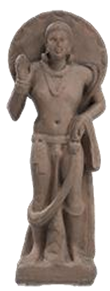

Dynasty: Ahichchhatra
Period: 200 CE
Material: Sandstone
Location: National Museum
Maitreya, the future Buddha to be, resides in the Tushita heaven as a bodhisattva waiting to redeem humanity. In Buddhism, Maitreya is the eighth Buddha, a successor of the seven historical Buddhas (sapta-manushi Buddhas). The Digha Nikaya mentions, Maitreya Buddha will be born in Ketumati, in present-day Varanasi, Uttar Pradesh. As a bodhisattva, Maitreya wears a heavily adorned with earrings, wristlets, necklaces, and an amulet.
→ READ MORE